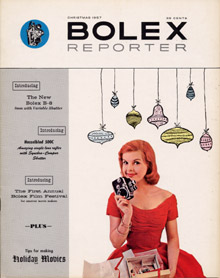
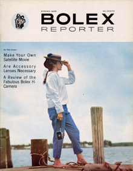
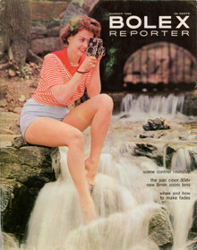
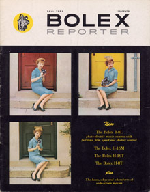

Bolex Reporter, Volume 8

- Christmas 1957
- Volume 8, Number 1
- Articles: "Introducing the new Bolex B-8 with Variable Shutter", Les Barry; "Extreme Closeups are Easy", Ernst Wildi; "Editing Can be Fun", Rita Cummings; "Recipe for Christmas Movies", Asa Young; "Bolex Movie Calendar for '58", Dave Bennett; "Get Your Camera into the Weather", Ruby Juster; "Low Cost Lighting for Indoor Movies", Norman Rothschild; "Introducing the new Hasselblad 500C", Norman Rothschild
- In 1957, Paillard Inc. announced a film festival - originally intended to be an annual event - to "stimulate creative activity" among Bolex camera owners. An entry form and rules were included in this issue.
- 32 pages

- Spring 1958
- Volume 8, Number 2
- Articles: "The Fabulous H-Cameras", Les Barry; "A Dog's Life", Molly Cook; "Are Accessory Lenses Neccessary", Ted Russell; "Weegee Puts Mirrors on His Bolex", Weegee; "Your Home Town in Action", Ruby Juster; "To Make a Satellite Movie", David Bennett; "Steady", Asa Young; "Hasselblad Means Versatility", Sidney Plaiz
- Weegee's method for filming unusual footage with his H-16 Reflex and a kaleidoscope is detailed in this issue. The short article illustrates a method to build your own attachment with mirrors.
- 32 pages

- Summer 1958
- Volume 8, Number 3
- Articles: "Only Bolex Has Scene Control", Les Barry; "Your Pan Cinor Zoom Lens is Multi-Valuable", J.M. Stern; "Variable Shutter Control", Frank P. Fritz; "Movies by Available Light", Sidney Plaiz; "Making Movies from Slides", Ira Latour; "Title While You Travel", D. Figel Hartman; "How to Make and Use Fades", Ernst Wildi; "Get it All In With the Hasselblad Superwide", Asa Young; "Bolex Traveler", Tad Sadowski
- This issue mainly focuses on the variable shutter feature of the B-8VS. Frank Fritz discusses proper exposure methods, while Ernst Wildi explains techniques for filming fades.
- 32 pages

- Fall 1958
- Volume 8, Number 4
- Articles: "Introducing the Bolex B-8L", Les Barry; "Whys and Wherefores of Wide Screen Movies", Milton A. Jones; "Autumn Project: A Zoo Film", Ted Russell; "Get the Most out of F.P.S. Speeds", Ernst Wildi; "Bolex Traveler", Leendert Drukker; "Reviewing the B-8L", Ernst Wildi; "Sports Car Movies", Charles Gellis; "Back to School with Bolex", Raymond C. Lawson
- Both the B-8L and its "Compumatic" exposure system are reviewed in separate articles. "Three New H-Cameras" introduces the H-16T, H-8T and H-16M, along with the PC-12 preview finder.
- 32 pages